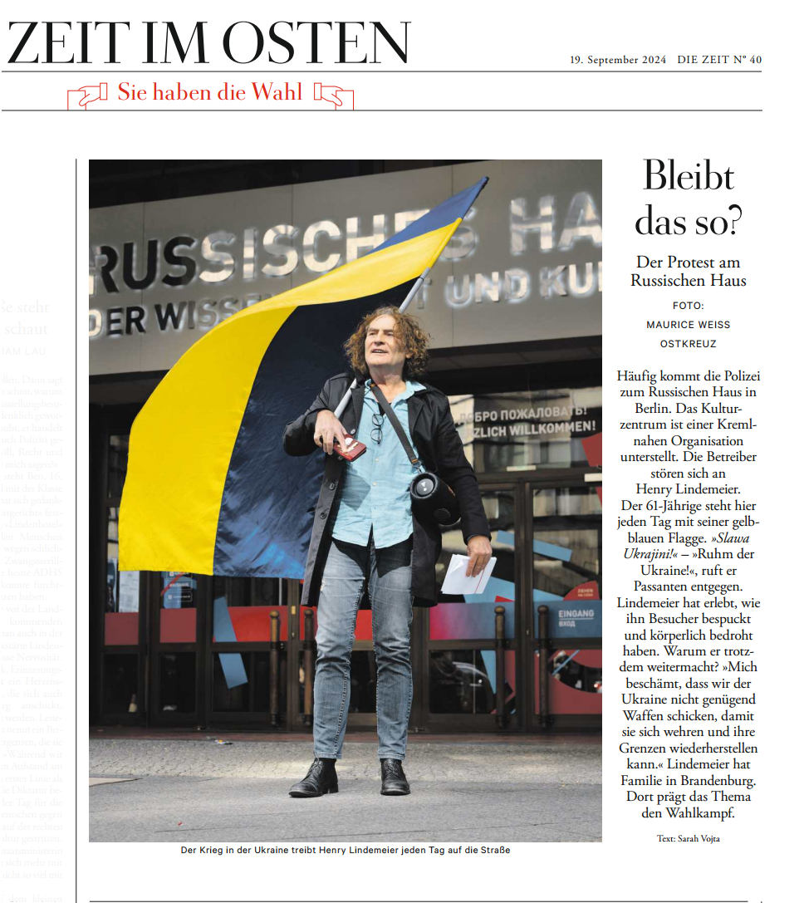

Die folgenden Auszüge geben die wesentlichen Inhalte des Artikels wieder. Der vollständige Originalartikel erschien in der jeweiligen Publikation.
Häufig kommt die Polizei zum Russischen Haus in Berlin. Das Kulturzentrum ist einer Kreml-nahen Organisation unterstellt. Die Betreiber stören sich an Henry Lindemeier. Der 61-Jährige steht hier jeden Tag mit seiner gelb-blauen Flagge.
„Slawa Ukrajini!" – „Ruhm der Ukraine!", ruft er Passanten entgegen.
Lindemeier hat erlebt, wie ihn Besucher bespuckt und körperlich bedroht haben. Warum er trotzdem weitermacht?
„Mich beschämt, dass wir der Ukraine nicht genügend Waffen schicken, damit sie sich wehren und ihre Grenzen wiederherstellen kann."
Lindemeier hat Familie in Brandenburg. Dort prägt das Thema den Wahlkampf. Der Artikel erschien wenige Tage vor der Landtagswahl am 22. September 2024 – in einem Moment, in dem die Frage nach dem Umgang mit Russland die ostdeutsche Öffentlichkeit besonders stark beschäftigte.
Das Russische Haus in der Friedrichstraße wird von Rossotrudnitschestwo betrieben – einer russischen Regierungsbehörde, die seit Juli 2022 auf der EU-Sanktionsliste steht. Dennoch läuft der Betrieb weiter. Dass ein Einzelner wie Henry Lindemeier das öffentlich macht, ist nach Einschätzung der ZEIT bemerkenswert.